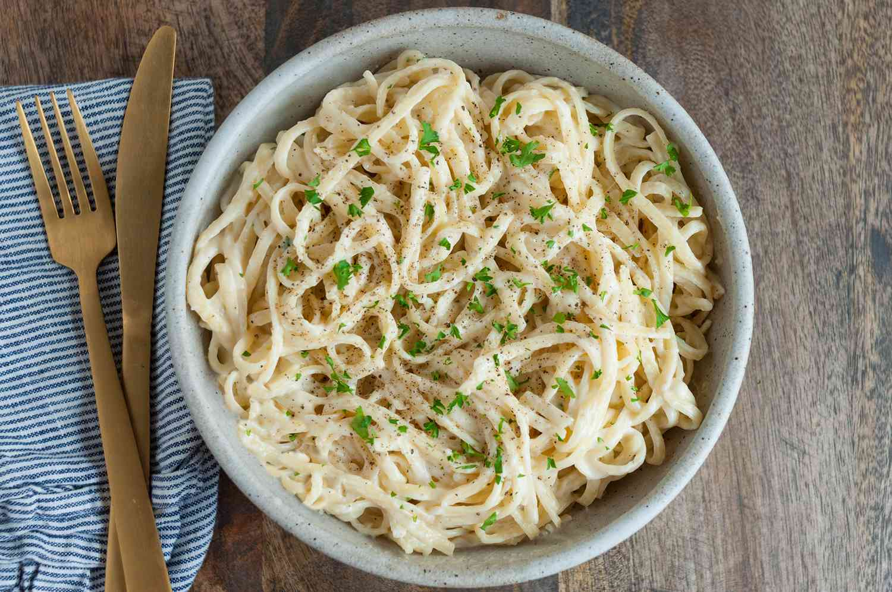

Alfredo
Back to Recipes

Creamy Alfredo
Creamy dairy-based sauce and chicken on thick fettuccini noodles
A wonderful dinner for a couple or family, this simple prep list is easy to throw together with
ingredients around the house.
Ingredients
- 2 box preferred noodles
- 1/2 stick butter
- 1 cup cream
- 1 1/2 cup grated parmesan
- parsley
- garlic
- 2 servings chicken
- 1/2 cup milk
Steps
- Boil water for noodles and add whole box (this will cook while we prepare the sauce)
- Cook your chicken to preference in a deep skillet and set aside
- In a sauce pan, mix butter and cream on med heat until fully emulsified
- Set on hi heat, and add parmesan and chicken
- Once cheese is melted into the sauce, add milk to thicken/thin as needed
- Add parsley, garlic, and season to taste
- Simmer on low heat while you drain noodles- DO NOT RINSE!
- Serve sauce on noodles and enjoy!